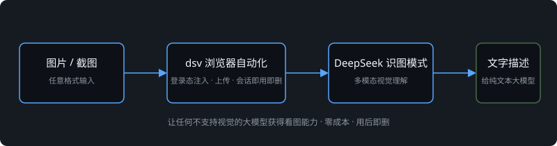

背景
DeepSeek 官方 API 是纯文本模型，没有图片理解能力；但 DeepSeek 网页版存在隐藏的「识图模式」（真实多模态视觉理解，非 OCR）。如果能把这个能力暴露成标准 CLI，任何不支持视觉的大模型（DeepSeek API、Claude Code、Codex、本地模型）都能"看图"。
方案
- 浏览器自动化驱动：驱动真实浏览器操作 DeepSeek 网页版识图模式，规避 PoW 反爬（前端自动计算，无需逆向）
- 登录态注入与会话管理：token 持久化、用后即删（识图完成自动删除会话，对话列表零污染）
- 分层识图策略：按任务精度分工（泛描述 / 结构判断 / 客观验证），不同任务用不同工具，成本与精度匹配
- agent 工作流集成：封装为转发壳，让纯文本 agent 透明调用视觉能力
结果
- 纯文本大模型获得零成本视觉能力，单次约 35 秒，真实多模态理解而非 OCR
- 已落地为日常 agent 工作流的标准环节（图表识别、界面描述、公式与截图理解）
- 上游为开源项目 deepseek-vision-cli（MIT），本项目的增量在于转发层、分层策略与工作流集成
工作流
